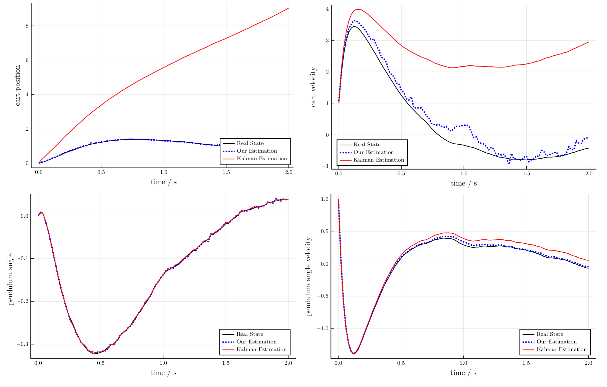
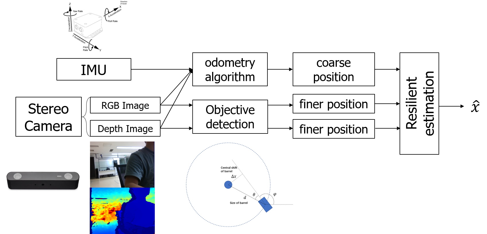

Resilient Estimation Against Sparse Integrity Attack
Table of Contents
Background and introduction
BACKGROUND: Security Problem of Estimation
Safety Critical Industries
- High safety requirements.
- More vulnerable System
- Modern control systems are becoming more open to the cyber-world.
- More intelligent algorithms.
Threats:
Malicious Attack:
Malfunctioning components:

Diverse environment:

Resilient Estimation

Problem formulation
Problem Formulation
- System equation:
$$ x(k+1)=Ax(k)+w(k), $$
where $x(k)\in{\color{var(--myred)}{\mathbb{R}^n}}$, $w(k)\sim\mathcal{N}(0,Q)$. - Measurement equation of sensor $i$:
$$ y_i(k)=C_ix(k)+v_i(k)+a_i(k). $$
- Full measurement equation:
$$ y(k)=Cx(k)+v(k)+a(k), $$
where - $(A,C)$ is observable. Note that $(A, C_i)$ is not necessarily observable.
- Each sensor needs to estimate the state $x$.
$$ y(k)\triangleq \begin{bmatrix} y_1(k)\\ \vdots\\ y_m(k) \end{bmatrix}\in {\color{var(--myred)}\mathbb{R}^m}, C\triangleq \begin{bmatrix} C_1\\ \vdots\\ C_m \end{bmatrix}, v(k)\triangleq \begin{bmatrix} v_1(k)\\ \vdots\\ v_m(k) \end{bmatrix}\sim\mathcal{N}(0,R), a(k)\triangleq \begin{bmatrix} a_1(k)\\ \vdots\\ a_m(k) \end{bmatrix} $$
Resilient Estimation vs Robust Estimation
Robust Estimation
Resilient Estimation
1. 只有部分传感器有问题
2. 不知道是哪些传感器有问题
3. 有问题传感器观测可被任意篡改
Sparse Attack
The attack is called a $p$-sparse attack if the vector sequence $a(k)$ satisfy that, there exists a time invariant index set $\mathcal{I}\subseteq \mathcal{R}\triangleq\{1,2,\cdots,m\} $ with $|\mathcal{I}| = p$ such that $\bigcup_{k=1}^{\infty} \text{supp}\left\{a(k)\right\} = \mathcal{I}$.Sparse Observability/Detectability
System $(A,C)$ is $s$-sparse observable (detectable) if system $(A,C_{\mathcal{I}\setminus\mathcal{C}})$ is observable (detectable) for any set of sensors $\mathcal{C}$ with cardinality $|\mathcal{C}| = s$.Estimator without attack
Kalman filter is the optimal estimator in an LTI Gaussian system. $$ \begin{aligned} \hat x(k|k-1)&=A\hat x(k-1),\\ P(k|k-1)&=AP(k-1)A^T+Q,\\ K(k)&=P(k|K-1)C^T[CP(k|k-1)C^T+R]^{-1},\\ \hat x(k)&=\hat x(k|k-1)+K(k)[y(k)-C\hat x(k|k-1)],\\ P(k)&=[I-K(k)C]P(k|k-1), \end{aligned} $$ where $\hat x(0)=0$ and $P(0)=\Sigma$.
Security of Linear Estimator
-
\(
\begin{align}
\hat{x}(k+1)&=(A-K C A) \hat{x}(k)+K y(k+1),\\
&=(A-K C A) \hat{x}(k)+\left[\begin{array}{c|c|c}K_1&\vdots&K_m \end{array}\right]\begin{bmatrix}y_1(k+1)\\ \vdots\\y_m(k+1)\end{bmatrix},\\
&=(A-K C A) \hat{x}(k)+\sum_{i=1}^m K_i y_i(k+1),
\end{align}
\)

Information Flow of Our Proposed Estimator
Assumption 1
Remark
Local Estimator Design
From Linear Combination to Resilient Fusion
- The linear combination is not safe since one corrupted $\zeta_i$ may corrupt the $\tilde{x}$.
-
We replace the linear combination to a resilient fusion scheme.
Lemma 1
The local estimation $\zeta_i(k)$ is a stable estimation of $G_ix(k)$ where $G_i$ is defined as following and the residue $\epsilon_i(k)\triangleq \zeta_i(k)-G_ix(k)$ satisfy: $$ \epsilon_i(k+1)=\Lambda\epsilon_i(k) - (G_i-\mathbf{1}_n C-i) w_i(k)+ \mathbf{1}_n v_i(k)+\mathbf{1}_n a_i(k), $$ and$$ G_i=\begin{bmatrix} G_{1,i}\\ \vdots \\ G_{p,i} \end{bmatrix}\in\mathbb{C}^{n\times n},\; G_{l, i}=\left[\begin{array}{c} C_{i} A\left(A-\lambda_{l} I\right)^{-n_{l}}+\cdots+C_{i} A\left(A-\lambda_{l} I\right)^{-1} \\ \vdots \\ C_{i} A\left(A-\lambda_{l} I\right)^{-2}+C_{i} A\left(A-\lambda_{l} I\right)^{-1} \\ C_{i} A\left(A-\lambda_{l} I\right)^{-1} \end{array}\right]\in\mathbb{C}^{n_{l} \times n} . $$
Least Square Fusion Scheme
$$\epsilon_{i}(k+1)= \Lambda \epsilon_{i}(k)\underbrace{-\left(G_{i}-\mathbf{1}_{n} C_{i}\right) w(k) +\mathbf{1}_{n} v_{i}(k+1)}_{\text{noise term}} \underbrace{+\mathbf{1}_{n} a_{i}(k+1)}_{\text{attack term}} .$$
Define $\tilde{W}$ as the stable covariance of $\left[\epsilon_1'(k) \cdots \epsilon_m'(k)\right]'$ when $a(k)=0$, then $\tilde{W}$ satisfy $$ \tilde{W}=\begin{bmatrix}\Lambda&&\\ &\ddots&\\ &&\Lambda \end{bmatrix} \tilde{W} \begin{bmatrix}\Lambda&&\\ &\ddots&\\ &&\Lambda \end{bmatrix} + \text{Cov}(\text{noise term}),$$ We have the following least square problem: \begin{align} &\underset{\check{x}(k), \mu(k)}{\operatorname{minimize}} \mu(k)' \tilde{W}^{-1} \mu(k)\\ &\text {subject to } \begin{bmatrix} \hat{\zeta}_{1}(k) \\ \vdots \\ {\zeta}_{m}(k) \end{bmatrix}= \begin{bmatrix} {G}_{1} \\ \vdots \\ {G}_{m} \end{bmatrix} \check{x}(k)+\mu(k) . \end{align}Least Square Fusion Scheme
\begin{align} &\underset{\check{x}(k), \mu(k)}{\operatorname{minimize}} \mu(k)' \tilde{W}^{-1} \mu(k)\\ &\text {subject to } \begin{bmatrix} \zeta_{1}(k) \\ \vdots \\ {\zeta}_{m}(k) \end{bmatrix}= \begin{bmatrix} {G}_{1} \\ \vdots \\ {G}_{m} \end{bmatrix} \check{x}(k)+\mu(k) . \end{align}
Theorem 1
In the absence of attack, i.e. $a(k)=\mathbf{0}$, the solution $\check{x}(k)$ of the above optimization problem coincides with the Kalman estimation, i.e., $\check{x}(k)=\hat{x}(k)$.LASSO Fusion Scheme
\begin{align} &\underset{\tilde{x}(k), \mu(k)}{\operatorname{minimize}} \mu(k)' \tilde{W}^{-1} \mu(k) +\gamma \|\nu(k)\|_1\\ &\text {subject to } \begin{bmatrix} \zeta_{1}(k) \\ \vdots \\ {\zeta}_{m}(k) \end{bmatrix}= \begin{bmatrix} {G}_{1} \\ \vdots \\ {G}_{m} \end{bmatrix} \tilde{x}(k)+\mu(k) +\nu(k). \end{align}
We will prove in the following that:Intuition of LASSO
Intuition of LASSO
LASSO Fusion Scheme
\begin{align} &\underset{\tilde{x}(k), \mu(k)}{\operatorname{minimize}} \mu(k)' \tilde{W}^{-1} \mu(k) +\gamma \|\nu(k)\|_1\\ &\text {subject to } \begin{bmatrix} \zeta_{1}(k) \\ \vdots \\ {\zeta}_{m}(k) \end{bmatrix}= \begin{bmatrix} {G}_{1} \\ \vdots \\ {G}_{m} \end{bmatrix} \tilde{x}(k)+\mu(k) +\nu(k). \end{align}
We will prove in the following that:Theorem 2 (Optimality without attack)
The solution $\tilde{x}(k)$ of the above optimization equals to Kalman estimation $\hat{x}(k)$ if the following condition is satisfied: $$ \left\|\tilde{W}^{-1}\left(I-\left[\begin{array}{c} {G}_{1} \\ \vdots \\ {G}_{m} \end{array}\right]\left[\begin{array}{lll} {F}_{1} & \ldots & {F}_{m} \end{array}\right]\right) \left(\zeta(k)-Gx(k)\right)\right\| \leq \gamma $$Remark
Theorem 3 (Security under attack)
The solution $\tilde{x}(k)$ of the above optimization problem is resilient against $p$-sparse attack if the following condition is satisfied: $ \forall x\in\mathbb{R}^n , x\neq 0, \forall \mathcal{C}$ with $|\mathcal{C}|=p,$ $$ \sum_{i\in\mathcal{C}} \|G_i x \|_1 < \sum_{i\in\mathcal{I}\setminus\mathcal{C}} \|G_i x \|_1. $$ Moreover, the estimation covariance upper bound is monotone increasing w.r.t $\gamma$.Remark
Problem and Improvement
Problems of this result
$ \forall x\in\mathbb{R}^n , x\neq 0, \forall \mathcal{C}$ with $|\mathcal{C}|=p,$ $$ \sum_{i\in\mathcal{C}} \|G_i x \|_1 < \sum_{i\in\mathcal{I}\setminus\mathcal{C}} \|G_i x \|_1. $$$$O_i\triangleq\left[\begin{array}{c} C_{i} \\ C_{i} A \\ \vdots \\ C_{i} A^{n-1} \end{array}\right].$$
The observable subspace with respect to sensor $i$ is $\text{Row}(O_i)=\text{Span} \left[C'_{i},(C_{i}A)',\cdots,\left(C_{i} A^{n-1}\right){'}\right]$. We have proved the following theorem:Theorem 4
When all the eigenvalues of $A$ have geometric multiplicity $1$, then$$\text{Row}(O_i)=\text{Row}(G_i)=\text{Row}(H_i),$$ where $$H_i=\begin{bmatrix}\mathbb{I}\{O^{(1)}_i\neq 0\} && \\ &\ddots& \\ &&\mathbb{I}\{O^{(n)}_i\neq 0\}\end{bmatrix}.$$
Corollary 4.1
There exists an invertible $n\times n$ matrix $P_i$ such that $P_iG_i=H_i$.Corollary 4.2
If the sparse observability index of system $(A,C)$ is $s$, then \begin{equation}\label{eq:calc_index} s=\min_{j=1,\cdots,n} \sum_{i\in\mathcal{I}}\mathbb{I}\{O^{(j)}_i\neq 0\} -1. \end{equation}\begin{align} &\underset{\tilde{x}(k), \mu(k)}{\operatorname{minimize}} \mu(k)' \tilde{M}^{-1} \mu(k) +\gamma \|\nu(k)\|_1\\ &\text {subject to } \begin{bmatrix} P_1\zeta_{1}(k) \\ \vdots \\ P_m{\zeta}_{m}(k) \end{bmatrix}= \begin{bmatrix} {H}_{1} \\ \vdots \\ {H}_{m} \end{bmatrix} \tilde{x}(k)+\mu(k) +\nu(k). \end{align}
Theorem 5
When all the eigenvalues of $A$ have geometric multiplicity $1$, the solution $\tilde{x}(k)$ of the above optimization problem is resilient against $p$-sparse attack if the system sparse observability index $s$ satisfy $s\geq 2p$.Improvement from observability to detectability
Since the stable states will finally converge to 0, the estimation of stable states can be trivially secure. We can further relax our condition to $2p$-sparse detectable.Separate matrix $A$ into two parts: \begin{equation*} A=\left[\begin{array}{c} A^\mathcal{U} \ | \ \ A^\mathcal{S}\end{array}\right] ,\ \ x= \left[\begin{array}{c} x^\mathcal{U} \\ x^\mathcal{S}\end{array}\right] \end{equation*}
For example:Corollary 4.3
When all the unstable eigenvalues of $A$ have geometric multiplicity $1$, then$$\text{Row}(O^\mathcal{U}_i)=\text{Row}(G^\mathcal{U}_i)=\text{Row}(H^\mathcal{U}_i),$$ where $$H^\mathcal{U}_i=\begin{bmatrix}\mathbb{I}\{O^{(1)}_i\neq 0\} && \\ &\ddots& \\ &&\mathbb{I}\{O^{(n_u)}_i\neq 0\}\end{bmatrix}.$$
We proceed to deal with stable part.Theorem 6
When the system is regular, in the presence of arbitrary $p$-sparse attack, if the system $(A,C)$ is $2p$-sparse detectable, the estimation $\tilde{x}(k)$ solved from the following problem is secure. \begin{align}\label{pb:resilient_LASSO} \underset{{\tilde{x}}(k), \mu(k),\nu(k)}{\text{minimize}}&\quad \frac{1}{2} \begin{bmatrix} \mu(k) \\ {N} {H} \tilde{x}(k) \end{bmatrix}^{'} \mathcal{W} \begin{bmatrix} \mu(k) \\ {N} {H} \tilde{x}(k) \end{bmatrix} + \gamma\left\|\nu(k)\right\|_1 \\ \text { subject to }&\quad {Y} (k)= {H} \tilde{x}(k)+\mu(k)+\nu(k) . \end{align}Fundamental Limit
If the system is not $2p$-sparse detectable, there exists a $p$-sparse attack strategy that no estimator is secure.Proof idea:
Summary
We proposed an resilient estimator in the presence of $p$ sparse attack for regular linear system.Theory:
Application:
- Can recover optimal Kalman without attack. Has bounded error covariance under attack. $\gamma$ balances them.
- Off-line computation: easy to calculate sparse observability/detectability index.
- On-line computation: solve a strongly convex optimization problem.
Simulation
Simulation
$$A=\begin{bmatrix} 1 & 2.0\cdot 10^{-2} & -2.0\cdot 10^{-4} & 1.9\cdot 10^{-5}\\ 0 & 1.0\cdot 10^{0} & -2.0\cdot 10^{-2} & 1.8\cdot 10^{-3}\\ 0 & 1.0\cdot 10^{-5} & 1.0\cdot 10^{0} & 2.0\cdot 10^{-2}\\ 0 & 1.0\cdot 10^{-3}& 2.1\cdot 10^{-1} & 9.8\cdot 10^{-1} \end{bmatrix}, C=\begin{bmatrix}1&0&0&0\\ 1&0&0&0\\ 1&0&0&0\\ 0&0&1&0 \end{bmatrix}$$ The system dynamic matrix can be written as the following Jordan canonical form by an invertible linear transformation: $$ \text{diag}(1.057,1,0.999,0.925), $$ and we consider the system after transformation. System matrix $A$ have four Jordan blocks with size $1\times1$ and the upper left two blocks have unstable eigenvalues. Therefore, the set of unstable states and stable states are $\mathcal{U}=\{1,2\},\mathcal{S}=\{3,4\}.$ The canonical form of $G_i^\mathcal{U}$ are \begin{align} H_1^\mathcal{U}=H_2^\mathcal{U}=H_3^\mathcal{U}=\begin{bmatrix} 1 & 0 \\ 0 & 1 \\ 0 & 0 \\ 0 & 0 \end{bmatrix},\ H_4^\mathcal{U}=\begin{bmatrix} 0 & 0 \\ 0 & 1 \\ 0 & 0 \\ 0 & 0 \end{bmatrix}. \end{align} Only the first 3 sensors can observe unstable state 1, and all the four sensors can observe unstable state 2$. Therefore, the system is 2-sparse detectable and our proposed estimator is secure in the presence of 1 corrupted sensor.No attack
Random data injection attack

Random data injection attack
Slope signal attack

Slope signal attack

Resilient Estimation for Model Racecar Drifting Control
Sensors:
Goal
On-board sensor State Estimation for aggressive DrivingChallenge

Basic set up

Sensor property
Sensor property

Sensor comparison
Camera+IMU coarse estimation:
Camera+IMU coarse estimation:
Fusion Result

Model Racecar drifting
Preliminary works
Publishing paper
Future Work
The slides can be seen at
https://zs-li.github.io/talk/resi_est/index.html